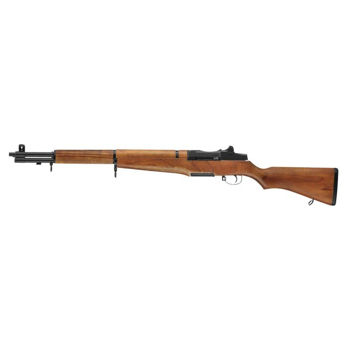

A lőfegyverek a 20. század eleje óta hatalmas fejlődésen mentek keresztül, az első világháború idején még a hagyományos puskák és géppuskák uralták a harctereket, napjainkban viszont már korszerű, könnyű és sokoldalú fegyvereket használnak. A fejlődés során nemcsak a fegyverek kialakítása változott meg, hanem a működésük, a pontosságuk és a katonai szerepük is.

Az első világháborúban a gyalogság legfontosabb fegyverei a hosszú, ismétlőpuskák voltak. Ezeket minden lövés után kézzel kellett újratölteni, de megbízhatóak és viszonylag pontosak voltak. Ilyen fegyver volt például a brit Lee-Enfield
 és a német
Gewehr 98
és a német
Gewehr 98
 .
.
A géppuskák megjelenése alapjaiban változtatta meg a hadviselést. A nagy tűzgyorsaságú fegyverek hatalmas tűzerőt biztosítottak, és jelentősen megnehezítették a nyílt terepen végrehajtott támadásokat. A katonák ezért egyre gyakrabban harcoltak lövészárkokból.
A pisztolyok elsősorban tisztek, illetve bizonyos különleges feladatokat ellátó katonák személyi fegyverei voltak. A háború végére megjelentek az első géppisztolyok is, amelyek már sorozatlövésre is képesek voltak.
A második világháború idején a fegyverek egyre változatosabbá váltak. A hagyományos puskák mellett széles körben elterjedtek a géppisztolyok, amelyek különösen közelharcban és városi környezetben bizonyultak hasznosnak.
Az amerikai M1 Garand

A német MP 40
 és az amerikai Thompson
és az amerikai Thompson
 géppisztolyok rövidebb kialakításukkal és sorozatlövési képességükkel tűntek ki. A háború végén megjelent a német StG 44
géppisztolyok rövidebb kialakításukkal és sorozatlövési képességükkel tűntek ki. A háború végén megjelent a német StG 44
 is, amely fontos lépést jelentett a modern gépkarabélyok kialakulása felé.
is, amely fontos lépést jelentett a modern gépkarabélyok kialakulása felé.
A második világháborút követően a katonai fejlesztések egyik legfontosabb célja a tűzerő, a kezelhetőség és a mozgékonyság összehangolása lett. A hosszú, nagy teljesítményű puskák mellett egyre nagyobb szerepet kaptak a kisebb tömegű, köztes lőszert használó gépkarabélyok.
Az 1940-es évek végén megjelent AK–47 a világ egyik legismertebb lőfegyverévé vált. Egyszerű felépítése és megbízhatósága miatt számos ország hadseregében elterjedt.
Az amerikai M16-os család könnyebb kialakítást és kisebb kaliberű lőszert alkalmazott. A fegyver az évtizedek során számos változaton ment keresztül. Emellett olyan fegyverek is meghatározóvá váltak, mint a belga FN FAL.
Ebben az időszakban fejlődtek jelentősen a mesterlövészpuskák, a könnyű géppuskák és a különleges feladatokra tervezett fegyverek is.
A modern lőfegyverek tervezésénél már nem kizárólag a tűzerő számít. Legalább ilyen fontos a kis tömeg, az ergonómia, a pontosság és a különböző kiegészítők használhatósága.
A mai gépkarabélyok jelentős része moduláris kialakítású, vagyis különféle irányzékokkal, lámpákkal, markolatokkal és más kiegészítőkkel szerelhető fel. Az optikai irányzékok és a korszerű anyagok szintén hozzájárulnak a fegyverek használhatóságához.
A HK416, az FN SCAR és az M4 karabély a modern katonai fegyverek ismert példái. Eközben a mesterlövészpuskák, a géppuskák és a pisztolyok is folyamatosan fejlődnek.
A technológia fejlődése a fegyverekhez kapcsolódó felszereléseket is átalakította: a digitális célzást segítő eszközök, a hőkamerák és az éjjellátók ma már számos katonai feladatban fontos szerepet töltenek be.